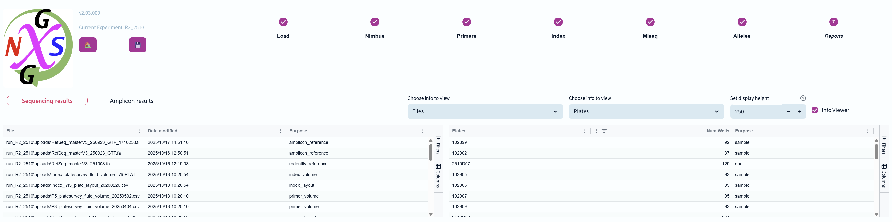
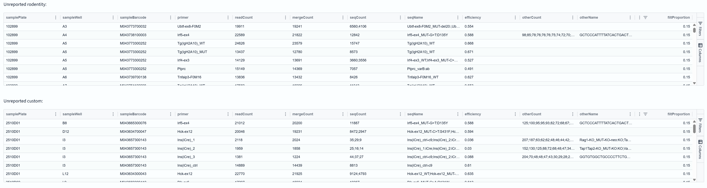
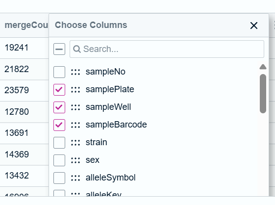
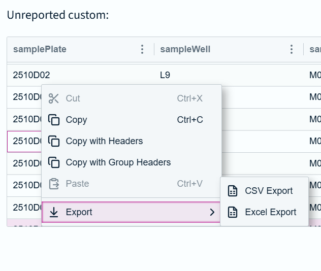
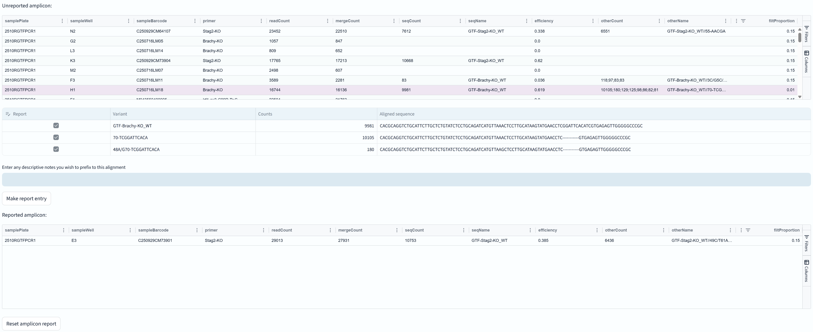
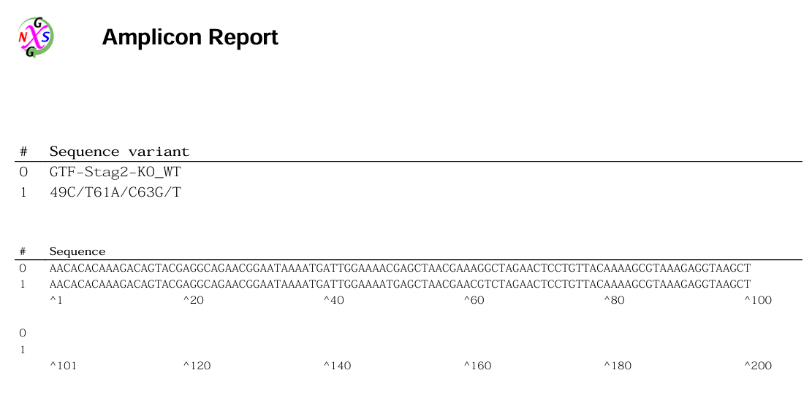

The seventh stage of the NGS genotyping pipeline displays reduced column summary tables of results from the Allele stage.
For the Amplicon pipeline, it also allows multiple sequence alignments to be viewed, filtered for relevance, and then saved to a PDF document.

There are two tabs: 1) "Sequencing Results" for Rodentity, Custom and "Other" (amplicons that might be from Rodentity, or otherwise use the standard pipeline), and 2) "Amplicon Results" for Amplicons plates that were run through the Amplicon workflow.
The info viewer is set to show Files and Samples, but likely users will want to turn it off to focus on the result tables.
This tab displays the sequencing results for Rodentity, Custom, and "Other" samples.

Each table says "Unreported" in the header, but that's because this pipeline simply have that need. Let's look at the columns in the table.
Tables can be ordered by any column (just click on them), and can be ascending or decending.
It is important to remember that this table shows many less columns of information than are actually available to the user.

By right-clicking on the column headers you can customise the table to display different column choices. Here is a list of the columns that aren't displayed by default:
A reminder that the table entries can be copied in a nice format and exported if required:

This tab displays the amplicon results for samples that were run through the Amplicon workflow.
It has its own tab because it supports additional features specific to the Amplicon workflow. Notably the ability to perform multiple sequence alignments of the observed sequences. These can filtered out using the adjustable proportion filter (this is the only column that supports changing the values in each row).

Clicking on a row to select it will open an additional table underneath that show the variants (if any) that pass the filtProportion cutoff.
These are sent to multiple sequence alignment and displayed (in non-monospace font due to graphics restrictions). These can be further down-selected using the checkboxes at left, and a description added in the available text box.
Then clicking "Make report entry" will add them to a PDF report file (named amplicon_alignments.pdf) containing aligned sequences for each chosen sample.
Once a sample has been added to the report, it is removed from the "Unreported amplicon" table and placed in a new table at bottom named "Reported amplicons".
Currently (v2.04.000) it isn't possible to remove individual amplicons from the report PDF, but you can choose to reset the amplicon report PDF using the "Reset amplicon report" button underneath this table.

This is a sample of the report PDF that is generated. Each sample gets its own page for clarity. Standard usage is to copy these into another document for final markup.